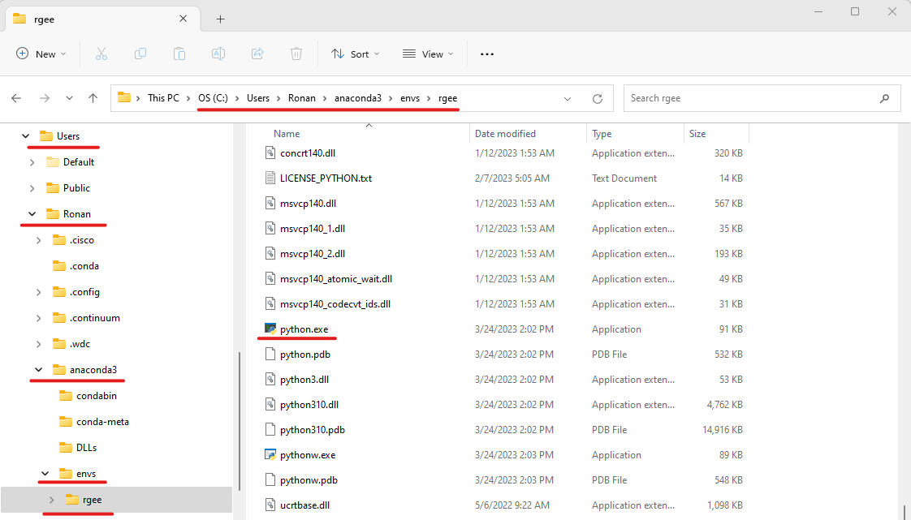

3 Connecting R to Earth Engine
Now that we have Python and the Earth Engine API installed and connected to our Google credentials, we now have to connect R to Python and the API
Open up Rstudio. If you haven’t already, install rgee
install.packages("rgee")3.1 Connecting R to Python
rgee is dependent on a package called reticulate (which is automatically installed when you install rgee). reticulate is what lets R talk to Python, thus letting R talk to Google Earth Engine.
First, we have to set up a path to where R can find a python.exe file. We could use Sys.which to find where python.exe is located…
Sys.which("python")## python
## "C:\\Users\\Ronan\\ANACON~1\\python.exe"HOWEVER! We need to be sure that this python executable file has the Earth Engine API connected to it. Remember all that work we did in the previous chapter? We created a conda environment specifically for rgee and installed the API in it. There is also a python.exe file within this environment, so we want R to work with this file.
# note that you will need to change the user name for your case
python_dir <- "C:\\Users\\Ronan\\anaconda3\\envs\\"
rgee_env <- paste0(python_dir, "rgee\\")
python_exe <- paste0(rgee_env, "python.exe")
python_exe## [1] "C:\\Users\\Ronan\\anaconda3\\envs\\rgee\\python.exe"file.exists(python_exe)## [1] TRUE(Note: this would also work with / instead of \\)
If, for whatever reason, the rgee environment we created in the last chapter is in a different location than mine (other than the user name) and you aren’t sure where it would be located, you can search for it within your file explorer
 Let’s tell R to use this Python file
reticulate::use_python(python_exe)## Warning: The request to
## `use_python("C:\Users\Ronan\anaconda3\envs\rgee\python.exe")` will be ignored
## because the environment variable RETICULATE_PYTHON is set to
## "C:\Users\Ronan\anaconda3\envs\rgee""3.2 Connecting rgee to the Python Environment
Now we need to connect rgee with the Python environment we created in the previous chapter. We could use the default rgee::ee_install, however, this creates a new environment. If we did this, this new environment would not have the Earth Engine API connected to it. Instead, we will use rgee::ee_ee_install_set_pyenv to specify an existing Python environment
rgee::ee_install_set_pyenv(py_path = rgee_env, py_env = "rgee")## EARTHENGINE_PYTHON='C:\Users\Ronan\anaconda3\envs\rgee\'
## EARTHENGINE_ENV='rgee'
## saved in: C:/Users/Ronan/Documents/.Renviron## rgee needs to restart the R session to see changes.You will be asked to restart your R session. Enter 1 for yes.